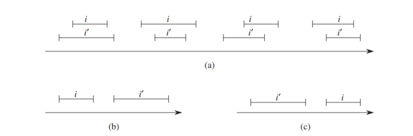

6.Interval trees
1. 红黑树的扩张 (Augmenting)
对基本的数据结构扩展使之支持一些附加功能，在算法设计过程中是十分常见的。当把红黑树作为基础数据结构进行扩张时：
定理：设 $f$ 是包含 $n$ 个结点的红黑树 $T$ 要扩张的属性，并且假设对于任一结点 $x$，$f$ 的值仅依赖于 $x$ 本身、$x.left$ 以及 $x.right$ 的信息 (也可以包括 $x.left.p$ 和 $x.right.p$)，那么可以做到在插入和删除操作期间对 $T$ 的所有值 $f$ 进行维护，并且不影响这两个操作的 $O(lgn)$ 的渐进性能。
此定理成立的原因在于，树中某结点 $x$ 的 $f$ 属性变动只会影响到 $x$ 的父结点，修改 $x.f$ 只需要更新 $x.p.f$。以插入操作为例，第一阶段插入结点，插入后 $x.f$ 的值沿树向上传播，需要时间 $O(lgn)$；第二阶段进行旋转，插入操作至多进行两次旋转，每次只有两个结点的左右孩子发生变化，其更新属性也需要时间 $O(lgn)$。
2. 区间树 (Interval Tree)
(1). 区间的性质
设对象 $i$ 是一个区间 $[t_1,\ t_2]$，它包括两个端点 (endpoint) 属性 $low$ 和 $high$。对任意两个区间 $i$ 和 $i'$ ，以下三种情况之一成立：
- (a). $i$ 和 $i'$ 重叠 (overlap)，即有 $i.high\leq i'.low\ \mathsf{and}\ i'.high\leq i.low$；
- (b). $i$ 在 $i'$ 左边，即有 $i.high < i'.low$；
- (c). $i$ 在 $i'$ 右边，即有 $i'.high < i.low$。

(2). 扩张的属性
区间树的结点包括三个属性，其中以区间的低端点 $x.low$ 作为红黑树的关键字；除两个端点属性外，还包括属性 $x.max$，表示以 $x$ 为根的子树中的所有结点的区间的端点的最大值。因此有： $$ x.max\ = \ \mathrm{max}(x.high,\ x.left.max,\ x.right.max) $$ 因此，根据上面的定理，插入和删除操作的时间为 $O(lgn)$，并且，一次旋转更新 $max$ 值只需要 $O(1)$ 的代价。
(3). 查询操作
INTERVAL-SEARCH(T, i)：找出树 T 中与 i 重叠的那个结点，若不存在则返回 T.nil。
code: INTERVAL-SEARCH
1 2 3 4 5 6 7 8 9 10 11 | Node* IntervalSearch(IntTree *tree, int low, int high) { Node *x = tree->root; // condition: x ≠ T.nil and i does not overlap x.int while (x != tree->nil && !(low <= x->high && x->low <= high)) { if (x->left != tree->nil && x->left->max >= low) x = x->left; else x = x->right; } return x; } |
此代码的主要思想为，若当前遇到的结点未覆盖指定区间 i，则查询一定会按安全的方向进行：
- 如果 x = x->left 未执行，则代表左子树中一定没有解；
- 如果 x = x->left 执行且左子树中没有解，那么右子树中也一定没有解。